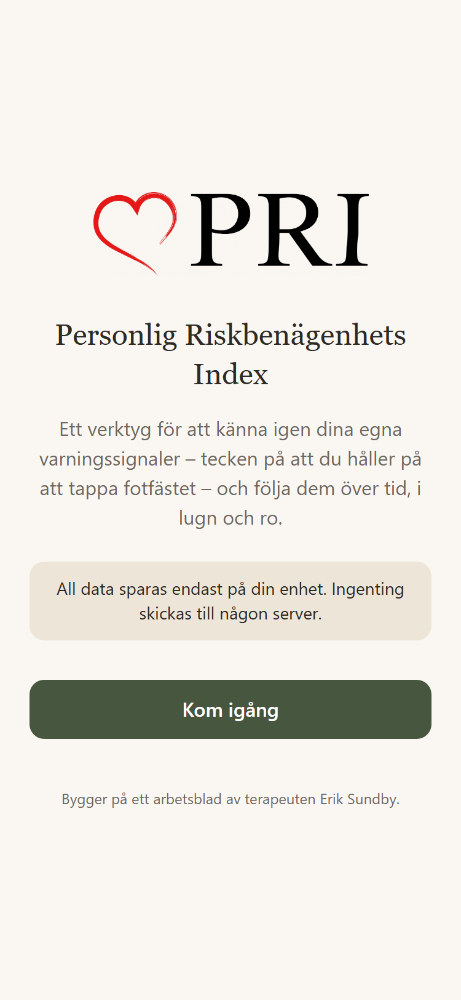
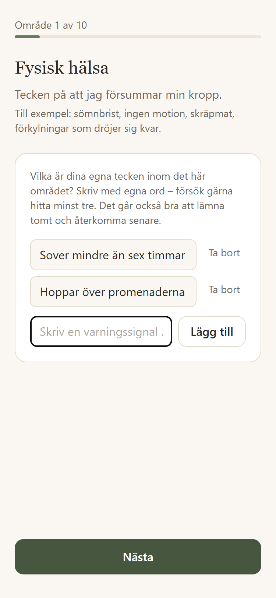
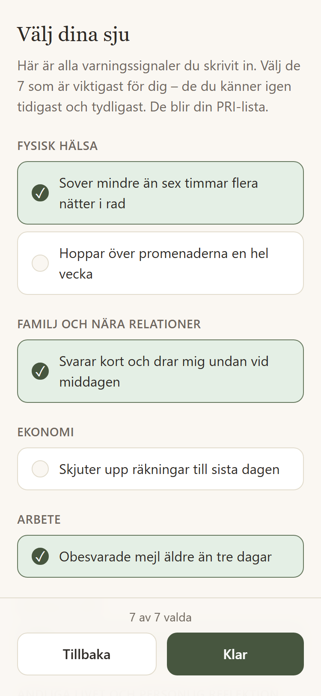
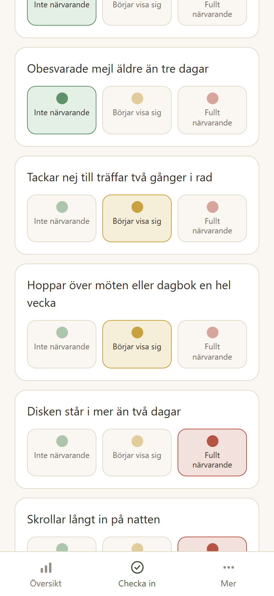
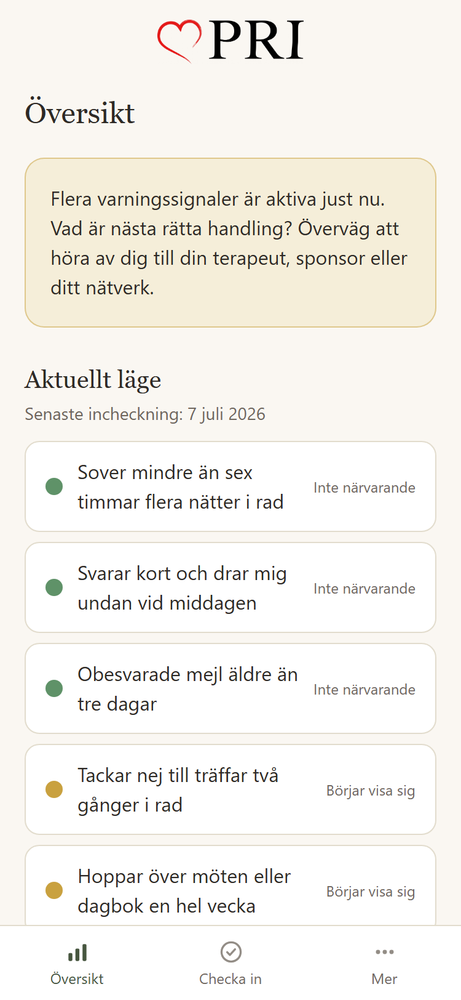
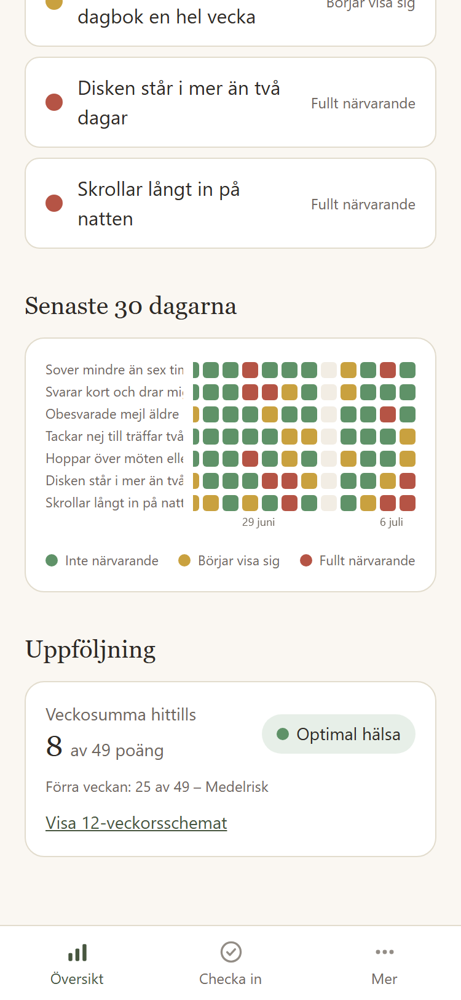
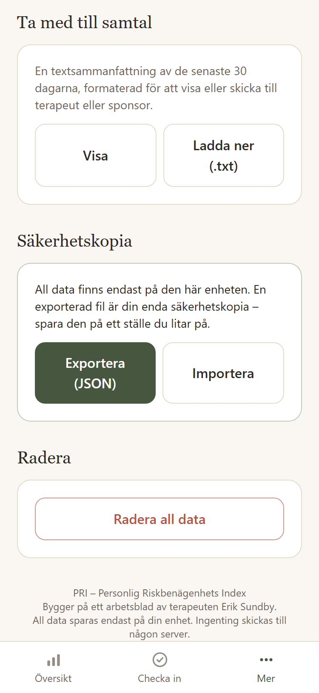
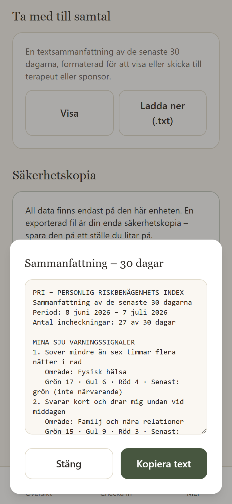

Genomgång · för personalmöte
Ett självskattningsverktyg för klienter i tillfrisknande från beroende. Klienten kartlägger sina egna varningssignaler – tecknen på att fotfästet håller på att tappas – och följer dem över tid, i lugn och ro.
Digitaliserar det befintliga arbetsbladet: tio livsområden, egna ord, de sju viktigaste signalerna.
Ingen tävling, inga poäng, inga krav. Lugn ton och dova färger – ett kliniskt verktyg för ärlig självskattning.
Inga konton och ingen server. Allt sparas lokalt på klientens egen telefon.

Fem steg, från kartläggning till samtalsunderlag. Skärmdumparna visar fiktiv exempeldata.
Steg 1 · Uppsättning
En guidad genomgång: fysisk hälsa, nära relationer, ekonomi, arbete, sociala livet, andliga livet, intressen, miljö, förflyttning samt andra beroenden och symptombeteenden. Varje område förklaras med exempel, och klienten skriver sina egna tecken i fritext.
Inget är obligatoriskt – områden kan lämnas tomma, och egna områden kan läggas till.

Steg 2 · Urval
Alla inskrivna signaler samlas, och klienten väljer de sju som känns igen tidigast och tydligast. De blir klientens PRI-lista – det som följs vid varje incheckning.
Listan kan redigeras när som helst. Byts en signal ut arkiveras den gamla, så att historiken aldrig går förlorad.

Steg 3 · Incheckning
Varje signal skattas med trafikljus, med en valfri kort anteckning. Dagligen som standard, veckovis som inställning. En ny skattning samma dag uppdaterar den gamla.

Steg 4 · Översikt
Översikten visar aktuellt läge per signal och de senaste 30 dagarna som en färgkarta – dagar gånger signaler. Mönster som smyger sig på blir synliga innan de hunnit bli stora.
»Flera varningssignaler är aktiva just nu. Vad är nästa rätta handling? Överväg att höra av dig till din terapeut, sponsor eller ditt nätverk.«
Varningslogiken: när tre eller fler signaler är gula eller röda i senaste incheckningen visas detta meddelande. Ingen skam, ingen alarmism – en stillsam påminnelse om nästa rätta handling.


Steg 5 · Till samtalet
En textsammanfattning av de senaste 30 dagarna – incheckningar, färgfördelning per signal, varningsdagar och anteckningar – klar att visa upp, kopiera eller ladda ner inför ett samtal.
Här finns också säkerhetskopian: eftersom all data bara finns på enheten kan klienten exportera och importera allt som en fil, samt radera allt med ett bekräftelsesteg.


All data sparas i telefonens lokala databas. Inga konton, ingen server, ingen analytics, inga tredjepartsskript.
Läggs till på hemskärmen direkt från webbläsaren och fungerar helt offline efter första besöket.
Sidan är inte länkad någonstans på sajten och indexeras inte av sökmotorer. Bara den som får länken hittar dit.
Klienten äger sin data: allt kan exporteras som en fil och läsas in igen – till exempel vid telefonbyte.
Signaler som byts ut arkiveras i stället för att raderas. Incheckningshistoriken förblir komplett.
Byggd med React, Vite och Tailwind. Serveras som statiska filer från missionphoenix.life – ingen drift utöver sajten.
Öppna verktyget och gå igenom uppsättningen – det tar några minuter. Allt du skriver stannar på din egen enhet och kan raderas när som helst.
Öppna PRIiPhone visar ingen egen installationsfråga – stegen görs manuellt via dela-knappen. Installationen är också ett skydd: en app på hemskärmen undantas från Safaris regelbundna rensning av webbplatsdata. Och eftersom all data ligger i appen på enheten gäller: raderas appikonen raderas datan – påminn gärna om säkerhetskopian under fliken Mer.